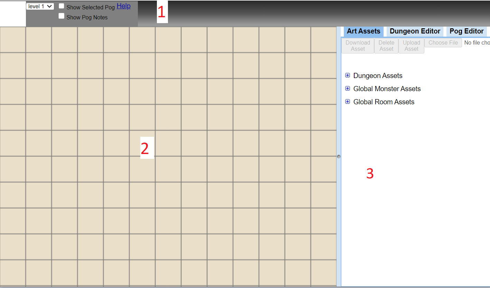
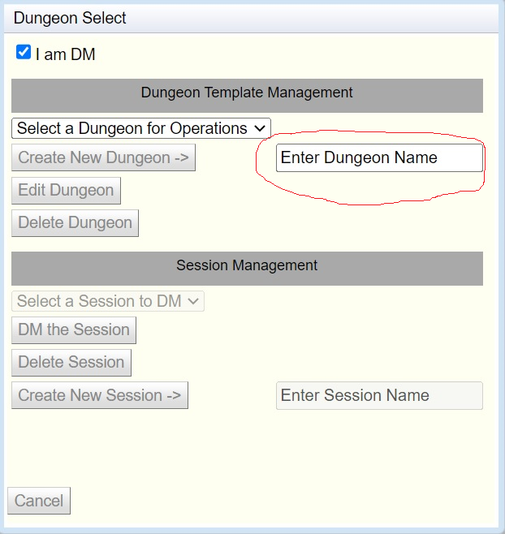
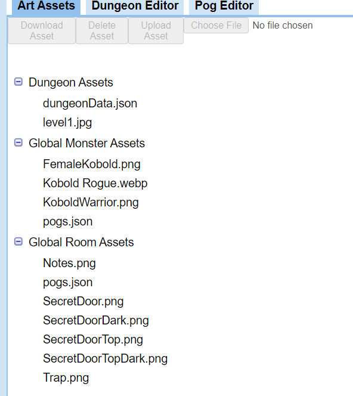
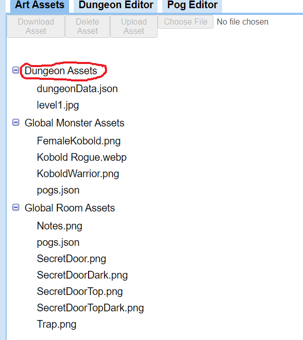
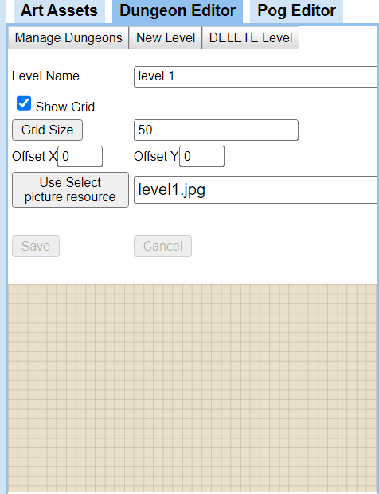
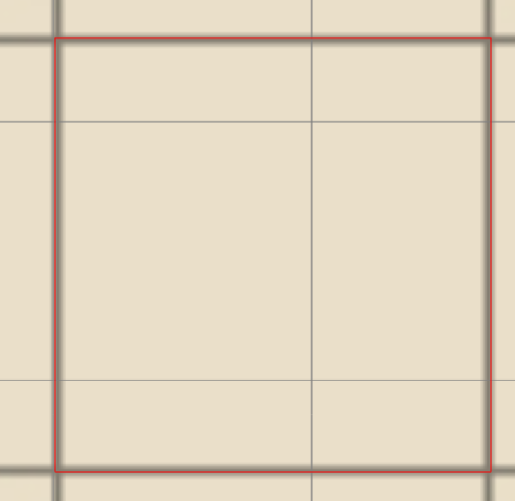
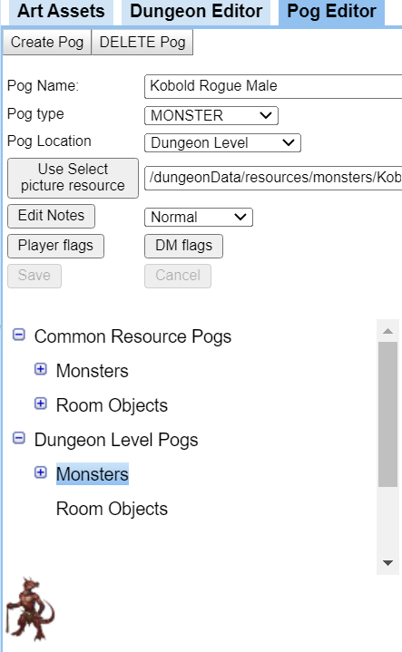

Following are some hints on how to use Electronic Battle Mat
Electronic Battle Mat Overview
Electronic Battle mat is a Web Application to help DMs and
players have a better experience for running a role playing game. It
encompasses four modes of operation.
- Creating and editing Template dungeons
Template dungeons contain all the maps and resources needed for
managing a single adventure. It is called a template because it is
not actually used directly by end users. This is because multiple
groups could be playing the same dungeon at the same time and you
would not want them to interfere with each other.
- Creating Dungeon Session
A dungeon session is a copy of a dungeon template that is owned
by a certain group. This session is private so it can be changed
without interfering with other groups playing the same one.
- DMing a Session
In this mode of operation a DM takes control of a session. They can
do may things like clear areas of FOG of WAR so players can see
stuff. They can make monsters and room objects visible or invisible
to players. They can move pogs around the map to show correct
positions. They can add new stuff like monsters that were not in the
dungeon template SURPRISE this dragon happened by and wants to
eat your face.
- Player joining a Session
In this mode of operation a player can view the Battle Mat.
They have very little functionality other than panning and zooming
the map. They can also create a PC pog and move it around the visible
areas of the map.
Dungeon Editor Layout
This is how the editor should look when it is first opened up on
a new dungeon created from the "Template" dungeon.

- This is the Ribbon Bar area.
- This is the Battle Mat area.
- This is the Information
Management area.
Ribbon Bar Area
- Selected Pog Area

This will show the picture of the currently selected Pog. You
can click and drag in this area to place a copy of the pog onto the
map.
- Level Selection Area

This is where you select which dungeon level you wish to view
or edit.
- Show Pog Notes Checkbox

By checking this box you will cause a floating dialog window to
appear. This window will allow you to view and edit the notes placed
on a pog. You can edit both regular notes which are viewable by the
players or DM notes only viewable by the DM.
- Show Selected Pog Checkbox

By checking this box you will cause a floating dialog window to
appear. This window will allow you to view the picture of the
selected pog. You can resize the window by dragging in the lower
right corner allowing you to get a better view.
- Show Help

By clicking here you will get this help page.
Battle Mat Area
This area is where the map and all the objects placed on it appear.
When you are DMing a session this will also display the areas that
have Fog of War (FOW) on them. It will be transparent to the DM
but will be solid black to the players preventing them from seeing
stuff. Following are a few things you can do with and to this area.
- Pan the Map
By clicking on the map and holding the mouse button down you
can change the position of the map.
- Zoom the Map
By spinning the center mouse button you can zoom in and out of
the map.
- Move Pogs around
You can click on a pog and drag it to a new spot.
- Add new pogs to map
By dragging and dropping a picture of a pog from the ribbon bar
you will create a new pog on the map. This is a copy of the pog and
not the original. So if you want two more of a monster already on the
map. You just need to select it so it shows in the ribbon bar then
drag and drop twice from the ribbon bar.
- Change properties of a pog
By right clicking on a pog you can change some properties. Like
make it visible or invisible to players or give it a number to help
players more easily identify it. You can even delete it from the map.
- Adjust Fog of War
Dms have the ability to adjust what the
players see I.E. change the fog of war. This can be done several ways
only when DMing a session
- Toggle FOW check box on ribbon bar
The DM can enable this mode by clicking in the checkbox. Once
in this mode you can click on the map in a grid square. The FOW in
that square will toggle. If you hold down the mouse button and move
around the map other squares will also change to what the starting
one was.
- Shift click in a grid square
The DM can change FOW by just holding SHIFT key down and
clicking in a square. The FOW in that square will toggle. If you
hold down the mouse button and move around the map other squares
will also change to what the starting one was.
- Control click in a grid square
The DM can change FOW by just holding Control key down and
clicking in a square. Now you drag to form a red rectangle. All the
squares in to rectangle will change to the opposite of the first one
you clicked in.
This area allows the DM to edit and create all kinds of
information related to the dungeon. It is broken into different tabs
to help separate functionality.
- Art Assets
This area allows you to manage the artwork needed for you
dungeon
- Dungeon Editor
This area allows you to edit and add dungeon levels
- Pog Editor
This area allows you to do things like edit, create and delete
pogs.
Creating a New Dungeon
These are the steps to create a new dungeon. You have access to
this dialog just after you log in.
- Check the I am DM check box
This opens up all the operations and privileges of a Dungeon
Master.
- Name the new dungeon
In the text box labeled "Enter Dungeon Name" enter the
name of your new dungeon. You can use letters, numbers and spaces in
the name. The name must be greater than 4 letters long and cannot
match an existing name. Once a legal name is entered the "Create
New Dungeon" button will be enabled.

- Click the "Create New Dungeon" button
This will create a new dungeon with the entered name by copying the
"Template" dungeon. It should now be visible in the "Select
a Dungeon for Operations" list.

Editing a Dungeon
These are the steps to edit a dungeon.
- Check the I am DM check box
This opens up all the operations and privileges of a Dungeon
Master.
- Select a Dungeon to edit
In the drop down called "Select a Dungeon for Operations"
select a dungeon to edit. This will enable the "Edit
Dungeon" button.
- Press the "Edit Dungeon" button
This will load in the dungeon and display the first level map.
The ribbon bar will also map to the available operations that the DM
can do on the dungeon.
Managing Art Assets
One of the first operations you will probably need to do is
manage some of the art assets. Specifically you will probably want to
have access to a picture that will be used for this level of the
dungeon

Above you can see that there are already some assets available
and they belong in three categories.
- Dungeon Assets
All items in this list belong specifically to the Dungeon you
are currently editing. For example level1.png is the picture for
level 1. So if you need to add or subtract any artwork for your
dungeon it would be in this list. dungeonData.json is a JSON
formatted text file containing all the information about the dungeon.
You should not need to manipulate this file manually. You can edit it
using the Dungeon Editor Tab
- Global Monster Assets
This list contains any pictures for monsters that you wish to
have available across all dungeons. pogs.json is a JSON formatted
text file containing the pog information that uses the pictures. You
should not need to manipulate this file manually. You can edit it
using the Pog Editor Tab.
- Global Room Assets
This list contains any pictures for room objects that you wish
to have available across all dungeons. pogs.json is a JSON formatted
text file containing the pog information that uses the pictures. You
should not need to manipulate this file manually. You can edit it
using the Pog Editor Tab.
Adding Art Assets
Following is how you would add an art asset.
- Select where you want the asset to be uploaded to.
For example you may wish this to be a dungeon asset so select the Dungeon
Assets area. You can select either the top level or any items in the
list. This will enable the Choose File button.

- Choose file you wish to upload.
Click the Choose File button then navigate to and select the
picture file you wish to upload then press the open button. The
filename should show up next to the Choose File button. The Upload
Asset button should become enabled.
- Upload the file.
Click the Upload Asset button to actually upload it to the
server. The list should update and show you the new file.
Deleting Art Assets
Select the item you wish to delete and the Delete Asset button
will enable. Just click it to delete the asset. Some assets like
dungeonData or pogs .json files cannot be deleted.
Selecting Art Assets
When you need to use an art asset in either the Dungeon Editor
or the Pog Editor just select a picture file in one of the lists. The
file path for the file you selected will show up under the buttons at
the top of the panel. This path is also save internally and is
available to be used by the mentioned editor. See those editors on the
specifics on how to get at it.
Managing Dungeon Levels
The tab labeled Dungeon Editor allows you to edit levels of the
dungeon. What information is shown here is dependent on what level is
selected in the drop down list on the ribbon bar.

Following is a brief description of what the items in this view
do.
- Manage Dungeons button
This will call up the Manage Dungeons Dialog box allowing you to
switch dungeons or create new ones as described in Creating a New Dungeon.
- New Level button
This will clear out the information for the current level and
make the entries ready for a new one. You just need to fill in the
appropriate information and click the save button to create the new
level.
- DELETE Level button
This deletes the currently selected level. There is no undo so
be very careful with this.
- Level Name
This is where you enter or change the name of the selected
level
- Show Grid checkbox
This is where you enable or disable the grid from showing on
the map. This is mainly used for sizing the grid. Most maps have the
grid already drawn on them but this tool needs to match that grid in
size and position so you would enable the grid to help with that
- Grid Size button
To assist in figuring out the size of a grid square you can do
the following. Go to the map and zoom in until one square is pretty
large. Then control click in the upper left corner of the square and
draw a rectangle to the lower right corner. Then release the mouse
button. The size of this box will get captured internally and get put
into the Dungeon editor dialog when you press the Grid Size button.
This will get the number close but might need some manual tweaking.
The number can have a decimal point in it so you can fine tune it.

- OffsetX and OffsetY
Once you have the grid size correct you probable will need to
have the grid move up, down, left or right. You enter decimal numbers
in Offset X and Y to do that.
- Use Selected picture resource button
The text area next to this button is where you enter the URL for the
picture you wish to use for this level. The picture can be gotten
from the internet by using its web path. It can also be gotten from
one of your assets you uploaded in the asset management tab. Just go
there and select the picture then come back here and press the Selected
picture resource button.
- Save button
If all information in the dialog area is correct then the save
button will enable. Just press it to save the data. If you had pushed
the New Level button then a new level will be created with the
information else the existing level will be edited.
- Cancel button
Pressing cancel will throw away changes and revert back to
original information.
Managing Pogs
The tab labeled Pog Editor allows you to edit, create and
delete pogs. Pogs are the little pictures you can create and drop onto
the map. They represent the monsters, Player characters, and room
object that might exist in the dungeon.

- Create Pog Button
This will clear out the dialog information in preparation for
creating a new Pog.
- DELETE Pog Button
This delete the currently selected pog. There is no undo so be
very careful with this.
- Pog Name
This is where you give your pog a name. I suggest you use the
following guideline in doing that. Make the name by using RACE CLASS
SEX separated by spaces. By doing this in the future filtering can
easily be added to narrow down choices to help find things.
- Pog type
There are three choices. MONSTER, ROOM OBJECT, and PLAYER. The type
are mostly to help separate them in lists. Players are the only
unique ones because there can only ever be one instance. So if you
drag and drop them on a different map they disappear from the
original map. Also PLAYER can only be created and used when DMing a
session because they exist in the Session data and not in the dungeon
data as explained later.
- Pog Location
This is where the data for this pog resides. Following are the
possibilities.
- Dungeon Level
This means the data exists in the dungeonData.json file in the
section for a specific level. Most of the time data is gotten here
by dragging and dropping a pog from the ribbon bar onto the map. A
copy of the select pogs information in placed in the Dungeon Level.
This is where you would also create any dungeon specific pogs.
- Session Level
This means the data for the pog is stored in the
sessionData.json file in a specific session. This file starts out as
a copy of dungeonData.json file. This way any pogs moved around,
created or deleted only affect the one session. Data is only changed
here when the DM is managing a session.
- Player Location
This means the data for the pog is stored in the
sessionData.json file in a specific session. The data for these
player characters are in a special portion of the sessionData.json
file. Data is only changed here when the DM is managing a session.
- Common Resource
This means the data for the pog is stored in the pogs.json
file in common resource area. This area is outside of any specific
dungeon and therefore applies to all of them. This is where you
would add pogs that all dungeons might shares like Kobolds.
- Use Selected picture resource button
The text area next to this button is where you enter the URL for the
picture you wish to use for this pog. The picture can be gotten from
the internet by using its web path. It can also be gotten from one of
your assets you uploaded in the asset management tab. Just go there
and select the picture then come back here and press the Selected
picture resource button.
- Edit Notes button
Pressing this button will bring up a dialog box the will allow
you edit either the player visible notes or the DM notes that the
players don't see. Any pog can have notes on them. These are useful
for adding box text to the map.
- Pog size drop down
Next to the notes button is a size drop down. Normal means the
pog takes up one grid square. Large is 2x2. Huge is 3x3. Gargantuan
is 4x4
- Player Flags button
This button will bring up a dialog to select player flags.
These are flags players can adjust during a session.
- Dead
This means the monster or player is dead. An indicator will be
placed on the Pog to denote that.
- Invisible
This means the monster or player is invisible. The pog will be
transparent to denote that. This transparent pog can be seen by
players.
- DM Flags button
This button will bring up a dialog to select DM flags. These
are flags only a DM can manipulate.
- Invisible to Player
This means the monster or PC is invisible to players. The pog
will be transparent to the DM denote that. This transparent pog
cannot be seen by players.
- Transparent Background
If the picture for a pog has a transparent background then it
is allowed to be used. Otherwise a white background is used.
- Shift to Right
Normally pogs are draw with the upper left corner matching the
upper left corner of a grid square. Something you might wish it to
be over a bit for example a secret door would be on the wall and not
in a square. By selecting this option the pog will move to the right
half a square.
- Shift to Top
Normally pogs are draw with the upper left corner matching the
upper left corner of a grid square. Something you might wish it to
be over a bit for example a secret door would be on the wall and not
in a square. By selecting this option the pog will move up half a
square.
- Dark background in edit mode
Sometimes a light pog picture is hard to see against a light
background. By making the background dark in edit mode it helps.
- Save button
If all information in the dialog area is correct then the save
button will enable. Just press it to save the data. If you had pushed
the New Pog button then a new pog will be created with the
information else the existing pog will be edited.
- Cancel button
Pressing cancel will throw away changes and revert back to
original information.
- Pog trees
Below the editable area is where to trees of existing pogs
lives. you can use this to find and select a particular pog. The
information for it will show up in the edit area and its picture will
show up in both the ribbon bar and at the lower part of this panel.
You can drag and drop either picture to create a copy on the map.
Creating a Session
To create a new session do the following steps.
- Get into the Manage Dungeons dialog.
You can do this by revisiting the Electronic Battle Mat screen
and log back in.
- Check the I am DM check box
- Select the template dungeon you wish to make a session for

- Enter a new Session name
This name must be unique from other sessions in this dungeon
and it must be at least 4 characters long and can't start with "Enter
"

- Click the "Create New Session" to create the
session.
Now the Session name should be in the Select session list. This
makes it available for functions like "DM the Session" or "Delete the
Session"
NOTICE: Once you create a session any edits you make on the
template dungeon will not show up in the session. This is because a
session is actually a copy of the dungeons database so any new
changes will not show up in the copy.
DMing a Session
Following are things you need to know and do while DMing a
session.
- Add PCs (Player Characters) artwork
One of the first thing you will want to do is create some Player
Characters. To do this you first upload all the pictures you need to
use if you don't have a URL for them. You do this in the Assets Tab
under the Dungeon Assests tree. Adding
Art Assets
- Create a pog for PC
You will then need to create a pog for each PC in the Pog Editor. Managing Pogs Make sure to select pog type
"PLAYER" and pog location as "Player Location".
- Clear FOG of WAR in an area
Clear FOG of WAR in an area on the starting map where you wish the
PCs to start. Clearing FOW I usually do
this by Control clicking and drawing a selection rectangle. All grid
squares in the rectangle will toggle.
- Place PCs on map
To place PCs on the map go to the Pog Editor tab and expand the
Players tree. Then one at a time select a name in the list. This will
selected the pog and the picture should show up in the ribbon bar and
also at the bottom of the pog editor. You can now click on either
picture and drag it onto the map. You will need to do this step every
time the players go to a new level.
- DM the session
DMing is fairly straight forward. You just clear FOW from areas
you want players to see. You can move around pogs during combat. You
can change properties of a pog by right clicking on it for doing
things like marking it as dead. You can add more monsters on the fly
be selecting one either on the map or in the Pog editor and dragging
and dropping it to the map from the ribbon bar.